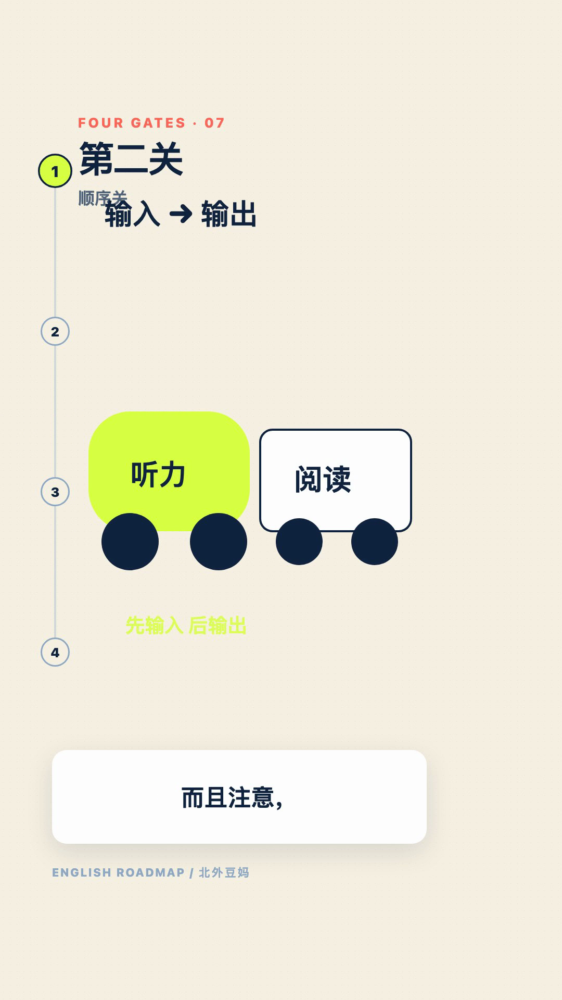
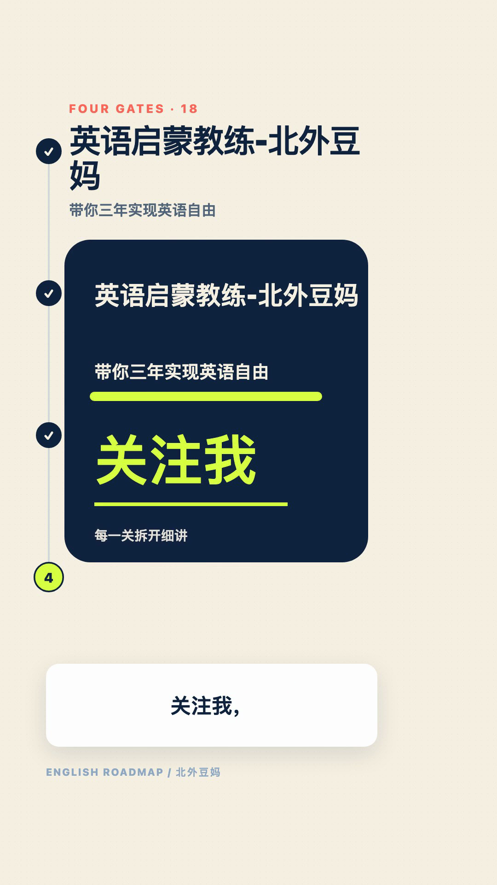

Un espace local de production vidéo piloté par OpenCode. Vous ne fournissez que le script, l’objectif de communication et les contraintes métier ; les agents prennent en charge les propositions créatives, la direction, le storyboard, les médias, la fabrication, les contrôles et les reprises, pour que le public comprenne le contenu dès le premier visionnage — le code, les projets vidéo et l’environnement restant séparés.
TextVideoGen décompose la production vidéo locale en 13 étapes vérifiables : script, narration, alignement, traitement créatif, direction, storyboard, ressources, rendu scène par scène, composition, contrôle qualité, validation finale, reprise et livraison. Des contrats structurés consignent les entrées et sorties de chaque étape, si bien qu’une modification ne relance que les scènes concernées ; chaque scène peut prendre la forme d’une animation HTML/SVG, d’une image, d’un montage hybride ou d’un B-roll.
Reproductible en localEnvironnement d’exécution, code et film final sont gérés séparément.
Reprise à l’échelle de la scèneL’analyse d’impact et la vérification par empreinte permettent de réutiliser les scènes inchangées.
Livraison sous contrôleLe contrôle qualité automatique et la validation humaine déterminent la version livrable.
À propos de ce projet
Ce qu’il traite
La vidéo générée souffre couramment de processus non vérifiables et de reprises complètes après une modification locale. TextVideoGen ne vous laisse responsable que du script, de l’objectif et des contraintes ; le reste revient aux agents, et la production est décomposée en étapes régies par des contrats, afin que les entrées, sorties, versions et décisions de validation de chaque étape restent traçables.
Organisation de la chaîne
Un contrat de projet est établi d’abord, puis les agents proposent deux ou trois traitements créatifs réalisables et en recommandent un. Narration, alignement temporel, direction, storyboard et ressources de scène s’enchaînent ensuite ; après le rendu scène par scène, le contrôle qualité technique s’exécute et une version livrable n’est produite qu’après validation humaine. En cas de modification, l’analyse d’impact intervient en premier.
Ce qu’il utilise
OpenCode orchestre les tâches multi-étapes ; Voicebox assure la narration, WhisperX l’alignement temporel, le rendu repose sur HTML / SVG Motion avec Playwright, et la composition sur FFmpeg. JSON Schema et les empreintes consignent les relations entrée-sortie.
État actuel
Le paquet source v0.1.0 est publié et l’espace de travail prend actuellement en charge macOS Apple Silicon. Les artefacts de génération historiques ont été supprimés lors du rangement ; les anciens projets ne conservent que leurs scripts sources et leurs journaux de nettoyage, et la fabrication repart de l’étape script.
13 étapesDu script à la livraison
4 formes de scèneHTML · image · hybride · B-roll
v0.1.0Premier paquet source
macOS arm64Plateforme prise en charge
La génération vidéo comme ingénierie
Chaque étape possède des entrées explicites, des sorties structurées, des versions et des portes de validation.
Environnement isolé
Node, pnpm, Python, uv, WhisperX, Chromium, FFmpeg et les modèles restent dans .videoenv.
Contrats structurés
Projets, storyboards, contrôles de mouvement, reprises et prompts sont encadrés par les JSON Schema de schemas/ et les prompts de prompts/.
Traçabilité complète
Appels de modèles, résultats d’étapes, décisions de validation et livraisons restent reliés à leurs entrées.
Recalcul minimal
L’analyse d’impact ne rerend que les scènes touchées ; le reste est vérifié par empreinte.
Pipeline de production
GPT assure la création, la direction, le périmètre de reprise et la validation finale ; DeepSeek assure la mise en forme, les métadonnées et les vérifications préliminaires, dont les résultats doivent être revus.
01—02Script + Voix
Script structuré et narration Voicebox locale.
03—04Aligner + Créer
Alignement WhisperX puis traitements créatifs des agents.
05—06Diriger + Storyboard
Direction et storyboard liés au texte et aux médias.
07—08Médias + Rendu
Ressources de scène enregistrées et rendu image par image.
09—10Composer + QA
Assemblage par un seul filter graph et QA technique.
11—13Valider + Réviser + Livrer
Validation humaine, reprise ciblée et livraison atomique.
De HTML Motion à la vidéo
Le rendu navigateur et la chaîne média FFmpeg combinent animation expressive et timing précis ; le moteur de rendu partagé est à 30 fps par défaut et passe à 60 fps pour les mouvements rapides.
01 · Scène
Contrat de scène
Sous-titres, médias et signature visuelle.
02 · Navigateur
Playwright
Les scènes HTML / SVG deviennent un flux JPEG.
03 · Encoder
FFmpeg
image2pipe évite des milliers de fichiers.
04 · Composer
Assemblage exact
Un filter graph recale, joint et mixe l’audio.
05 · Vérifier
QA automatisée
Décodage, noir, gel, silence et durée A/V.
Sortie d’un exemple archivé
Un exemple antérieur, « Les quatre étapes de l’apprentissage de l’anglais » : 1080 × 1920, 30 fps, 18 scènes. Ses artefacts de génération ont été supprimés lors du rangement et le projet est revenu à l’étape script ; les images et données de vérification ci-dessous constituent donc un enregistrement d’archive.
L’ouverture établit la hiérarchie et le système visuel.

Le motion design explique l’ordre entrée-vers-sortie.

Une carte finale stable conserve la pause prévue.
Preuves QA (archivées) : les 18 scènes sont présentes et ordonnées ; l’écart vidéo/audio est de 0,011667 s ; aucune erreur de décodage, image noire ou pause audio supérieure à 0,8 s ; neuf scènes modifiées ont été recalculées et neuf autres vérifiées par empreinte.
Prise en main et commandes courantes
Tous les points d’entrée sont regroupés dans bin/, avec des commandes distinctes pour l’installation, les projets, les journaux, la livraison et le paquetage.
Préparer l’environnement
./bin/setup installe l’environnement d’exécution, les dépendances, le navigateur et les modèles dans .videoenv ; ./bin/check-environment se contente d’inspecter, sans inférence.
Créer et produire
./bin/new-project my-video "Titre" crée la structure du projet, puis ./bin/opencode-video confie la fabrication aux agents.
Journaliser et vérifier
./bin/video-log consigne les événements d’étape, et ./bin/pnpm-video check regroupe les contrôles de types, d’environnement isolé et de Voicebox.
Livraison sûre et récupérabilité
L’espace de travail se concentre sur la production ; le film final n’est déplacé vers le dossier Movies de macOS qu’après approbation.
Aucun écrasement
./bin/deliver-video n’écrase jamais une version existante et consigne le chemin cible, la taille du fichier et le SHA-256.
Code et film séparés
La vidéo finale sort du dépôt ; il ne reste qu’un enregistrement de livraison committable et la traçabilité complète de la production.
Environnement reconstructible
Supprimer .videoenv laisse le code source et les projets intacts ; relancer ./bin/setup restaure l’environnement aux versions figées.
Paquets source publiés
./bin/package-workspace construit un paquet source sans projets privés ni environnement d’exécution ; celui de la v0.1.0 pèse environ 22 Mo.
Contenu publiable uniquement
Le paquet contient le code, la configuration, les lockfiles, les ressources communes et les sources des Skills / plugins ; il exclut les métadonnées Git, les dépendances, les modèles, les caches, les journaux, les identifiants et les anciens projets.
Dossier de sortie distinct
Chaque exécution écrit dans .videoenv/tmp/packages/release-<heure>-<aléa>/ : les archives et empreintes précédentes ne sont jamais écrasées.
Vérifier puis installer
Un fichier SHA-256 accompagne l’archive ; décompressez-la dans un nouveau dossier puis lancez ./bin/setup pour reconstruire l’environnement figé.
Technologies
Modèles locaux, rendu navigateur et traitement média dans un même espace.